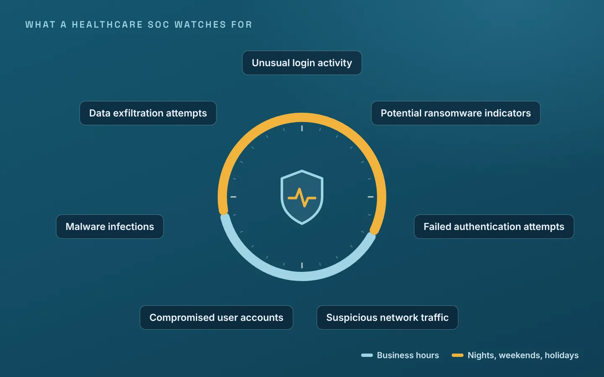
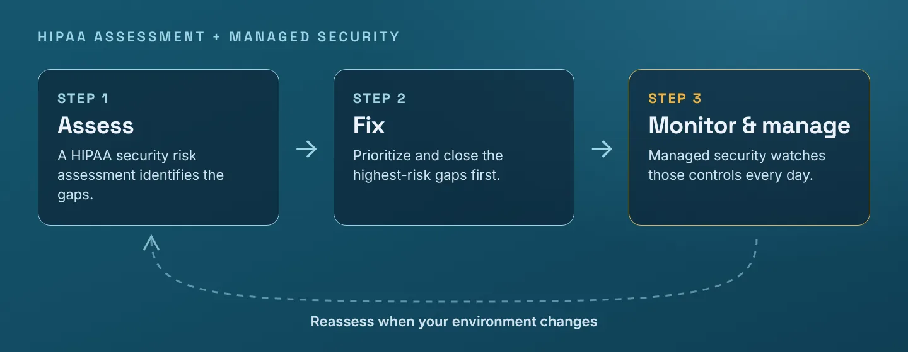
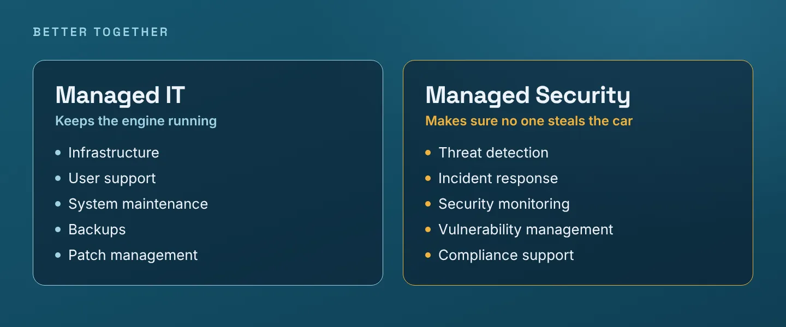

Most healthcare organizations don't struggle because they lack security tools.
They struggle because managing cybersecurity has become incredibly complex.
New threats emerge daily. Compliance requirements continue to evolve. Technology environments are expanding. And internal IT teams are often expected to do more with fewer resources.
At the same time, patients expect their information to remain secure, leadership expects systems to stay online, and cybercriminals continue searching for opportunities to exploit vulnerabilities.
That's a lot of pressure.
For many healthcare organizations, the solution isn't necessarily hiring more people or buying another security product.
Instead, they're turning to Healthcare Managed Security Services to gain access to experienced cybersecurity professionals, advanced monitoring capabilities, and around-the-clock protection without building a full-scale security department internally.
What Are Healthcare Managed Security Services?
Healthcare Managed Security Services provide ongoing cybersecurity management, monitoring, threat detection, and response support from a specialized security partner.
Think of it as adding an entire cybersecurity team to your organization without having to recruit, train, and retain security specialists yourself.
Rather than responding to threats only after they occur, managed security services focus on continuously identifying and addressing risks before they become serious problems.
These services often include:
- 24/7 security monitoring
- Threat detection and analysis
- Security Operations Center (SOC) services
- Vulnerability management
- Endpoint protection
- Incident response support
- Compliance monitoring
- Security reporting
- Healthcare network security management
The goal is simple: reduce risk while allowing healthcare teams to focus on delivering excellent patient care.
Why Healthcare Organizations Are Choosing Managed Security Services
Healthcare has become one of the most heavily targeted industries for cyberattacks. Hacking and IT incidents made up 81% of the large breaches (those affecting 500 or more people) that occurred in 2024, according to HHS's latest annual breach report to Congress. The FBI's 2025 Internet Crime Report lists healthcare and public health among the critical infrastructure sectors most affected by the top ransomware variants.
Unfortunately, cybercriminals understand something healthcare organizations know all too well:
Healthcare operations can't stop.
When systems become unavailable, clinical workflows slow down. Patient care is disrupted. Revenue is affected. Trust is put at risk.
Healthcare leaders recognize that cybersecurity is no longer just an IT issue.
It's a business issue.
It's a patient safety issue.
And increasingly, it's a board-level discussion.
Managed security services help organizations address those challenges through proactive protection and expert guidance.
The Challenge of Building an Internal Security Team
Let's be honest.
Finding qualified cybersecurity professionals is difficult. In ISC2's 2025 Cybersecurity Workforce Study, a survey of more than 16,000 security professionals, the most pressing concern for security teams wasn't headcount. It was skills.
Keeping them is even harder.
Many healthcare organizations face challenges such as:
- Limited cybersecurity staffing
- Competing budget priorities
- Growing compliance obligations
- Increasing cyber insurance requirements
- Expanding cloud environments
- Rising ransomware concerns
Even organizations with strong IT departments often find themselves stretched thin.
Your IT team may be responsible for:
- End-user support
- Infrastructure management
- Cloud administration
- EHR systems
- Medical devices
- Vendor management
- Strategic technology initiatives
Adding full-time cybersecurity monitoring on top of those responsibilities isn't always realistic.
That's why more organizations are embracing a managed security model.
What Does a Healthcare Security Operations Center (SOC) Actually Do?
One of the most valuable components of Healthcare Managed Security Services is access to a Security Operations Center, commonly referred to as a SOC.
A SOC functions as a dedicated team of security professionals who continuously monitor your environment for suspicious activity.
They're looking for things most organizations would never notice on their own.
For example:
- Unusual login activity
- Potential ransomware indicators
- Failed authentication attempts
- Suspicious network traffic
- Compromised user accounts
- Malware infections
- Data exfiltration attempts

The earlier threats are identified, the faster they can be contained.
And in cybersecurity, time matters.
A threat discovered within minutes is often much easier to manage than one discovered weeks later. IBM's 2026 Cost of a Data Breach Report found that organizations took an average of 247 days to identify and contain a breach, and that breaches contained in under 200 days cost about $1.3 million less on average ($4.32 million vs. $5.65 million).
Healthcare Network Security Is More Complex Than Ever
Years ago, healthcare network security primarily focused on protecting servers, workstations, and internal applications.
Today's environment looks very different.
Most healthcare organizations now rely on a combination of:
- Cloud applications
- Hybrid infrastructure
- Remote employees
- Patient portals
- Mobile devices
- Connected medical equipment
- Third-party software vendors
Every new connection creates an opportunity for productivity and innovation.
It can also create potential security risks.
Managed security providers help healthcare organizations maintain visibility across these complex environments while reducing vulnerabilities and improving security resilience.
Managed Security Services and HIPAA Compliance
A common misconception is that hiring a Managed Security Service Provider automatically makes an organization HIPAA compliant.
Unfortunately, compliance doesn't work that way.
However, Healthcare Managed Security Services play an important role in supporting HIPAA requirements.
Many managed security programs help organizations strengthen:
- Risk management practices
- Security monitoring
- Access controls
- Incident response capabilities
- Security documentation
- Audit readiness
These services often complement a formal HIPAA Security Assessment, helping organizations address identified risks and maintain stronger security controls over time.
In many ways, the assessment identifies the gaps.
Managed security services help monitor and manage them.

The Real Value of Continuous Monitoring
One of the biggest advantages of managed security services is continuous visibility.
Many organizations only gain insight into their security posture during annual assessments or after an incident occurs.
That's a risky approach.
Cyber threats evolve every day.
Continuous monitoring, a core category of the Detect function in the NIST Cybersecurity Framework 2.0, helps healthcare organizations:
- Detect threats sooner
- Reduce response times
- Improve operational awareness
- Validate security controls
- Identify vulnerabilities faster
- Strengthen compliance efforts
It's similar to monitoring a patient's vital signs.
You wouldn't want to check them only once a year and hope everything remains stable in between.
Cybersecurity requires ongoing attention as well.
Signs Your Organization May Benefit from Managed Security Services
Every healthcare environment is different, but several indicators commonly suggest the need for additional cybersecurity support.
You're Concerned About Ransomware
Healthcare remains a major target for ransomware attacks, making proactive monitoring increasingly important.
Your IT Team Is Overwhelmed
When internal resources are stretched thin, security monitoring often becomes reactive rather than strategic.
You're Preparing for a HIPAA Security Assessment
Managed security services can help strengthen controls and improve visibility before and after an assessment.
You're Expanding Your Technology Environment
Cloud adoption, AI initiatives, telehealth platforms, and digital transformation projects all introduce additional security considerations.
Leadership Wants Better Visibility
Executives increasingly want clear reporting and insights into organizational cybersecurity risk.
Managed security services can help provide that visibility.
Healthcare Managed IT and Managed Security: Better Together
One of the strongest technology strategies combines Healthcare Managed IT with Healthcare Managed Security Services.
The two functions complement one another.
Managed IT supports:
- Infrastructure
- User support
- System maintenance
- Backups
- Patch management
Managed Security focuses on:
- Threat detection
- Incident response
- Security monitoring
- Vulnerability management
- Compliance support
Together, they create a stronger, more resilient technology environment.
Think of Managed IT as keeping the engine running smoothly.
Managed Security helps ensure no one is trying to steal the car.

How to Choose the Right Healthcare Managed Security Partner
Not all security providers understand healthcare.
When evaluating potential partners, consider the following:
Healthcare Expertise
Look for experience working with healthcare organizations and understanding healthcare-specific regulatory requirements.
24/7 Monitoring
Cyber threats don't follow business hours.
Your security monitoring shouldn't either.
Compliance Knowledge
The right provider should understand HIPAA, risk assessments, security controls, and healthcare compliance frameworks.
Scalability
Your security strategy should be able to grow alongside your organization.
Strategic Guidance
Great providers don't simply respond to alerts.
They help align cybersecurity with broader organizational goals.
The Bottom Line
Cybersecurity has become too important, and too complex, to be treated as an occasional IT project.
Healthcare organizations need continuous visibility, proactive threat detection, compliance support, and access to specialized expertise.
Healthcare Managed Security Services provide a practical way to strengthen cybersecurity defenses while allowing internal teams to focus on patient care, operational excellence, and long-term growth.
Because at the end of the day, effective cybersecurity isn't just about protecting technology.
It's about protecting the people who depend on it.
Frequently Asked Questions
What are Healthcare Managed Security Services?
Healthcare Managed Security Services provide ongoing cybersecurity monitoring, threat detection, incident response, and security management specifically designed for healthcare organizations.
How are Managed Security Services different from Managed IT Services?
Managed IT focuses on maintaining and supporting technology systems, while Managed Security focuses on protecting those systems from cyber threats and security risks.
Do Managed Security Services help with HIPAA compliance?
Yes. While they do not automatically make an organization compliant, they help strengthen many of the security controls required to protect electronic protected health information (ePHI).
Are Managed Security Services suitable for smaller healthcare practices?
Yes. Many smaller organizations use managed security services to gain access to enterprise-grade cybersecurity expertise without the cost of maintaining a full internal security team.
Can Managed Security Services help prevent ransomware attacks?
While no security solution can guarantee prevention, managed security services can reduce risk through monitoring, threat detection, vulnerability management, and rapid response capabilities.
References
Sources are linked where they are cited in the article. Statistics are attributed to the original publisher wherever one exists; where a figure is only available through a news report, that report is cited.
- Federal Bureau of Investigation, Internet Crime Complaint Center. (2026, April). 2025 Internet crime report. https://www.ic3.gov/AnnualReport/Reports/2025_IC3Report.pdf
- IBM. (2026, July). Cost of a data breach report 2026. https://www.ibm.com/reports/data-breach
- ISC2. (2025, December 4). ISC2 publishes 2025 cybersecurity workforce study [Press release]. https://www.isc2.org/Insights/2025/12/ISC2-publishes-2025-cybersecurity-workforce-study
- National Institute of Standards and Technology. (2024, February 26). The NIST Cybersecurity Framework (CSF) 2.0 (NIST CSWP 29). https://doi.org/10.6028/NIST.CSWP.29
- U.S. Department of Health and Human Services, Office for Civil Rights. (n.d.). Annual report to Congress on breaches of unsecured protected health information for calendar year 2024. https://www.hhs.gov/sites/default/files/breach-report-to-congress-2024.pdf
- U.S. Department of Health and Human Services, Office for Civil Rights. (2010, July 14). Guidance on risk analysis requirements under the HIPAA Security Rule. https://www.hhs.gov/hipaa/for-professionals/security/guidance/guidance-risk-analysis/index.html